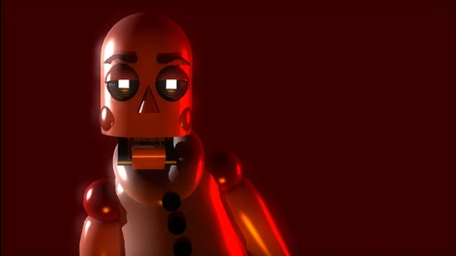
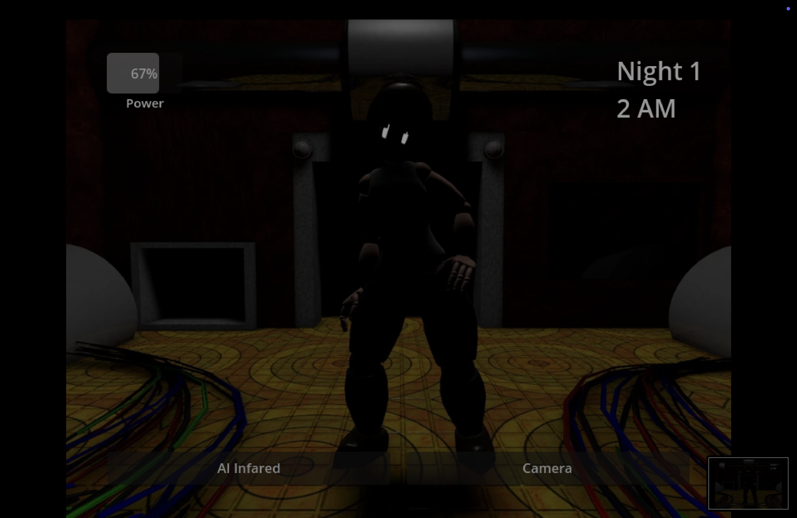

Stuffed 2: The Return of Fedetronic
About the Project
I was actually inspired to create this game since the original game developer, Fedriz, was going to release it in 2014, but cancelled since he wanted to focus on creating other indie games. So, I messaged him, myself, for permission to use his assets to make the game, and low and behold, I was given permission to do so. I look forward to providing more details about this game and providing more in the long-run!
What software / languages am I using for this project?
- Godot Engine
- GDScript
Current Progress
As of now, I have implemented the followng mechanics:
- Adding main assets to project folder
- Added a main menu, extras menu, intro scene, night display, office scene, and UI (for the office)
- Added way to turn lights on in office
- Added Camera system
- Added Jumpscares
- Added AI Sensor
- Added Vent System (including ability to close vent(s))
- Added way for animatronics to move around to office
- Added way to reprogram animatronics
- Added a continue button for main menu
- Added a 6am display that transitions to the next night
- Added a power system
- Added glitches that show when animatronics move
- Added MANY sound effects
- Added a custom night page (including a troll in it)
- Added a phantom jumpscare
- Added a wait time for closing a vent
Currently, I am working on adding some final touches and possibly adding cutscenes to the game... Stay tuned for more!
Screenshots


Credits: Fedriz, the original creator of the game!
Credits: Me, the new developer of this game!
Credits: Me, the new developer of this game!